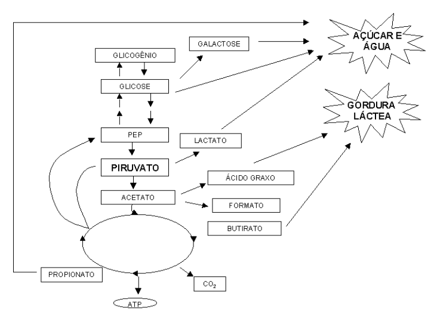

42 Nutrição de Animais de Produção
42.1 Introdução
Animais de produção podem ser nutridos com material in natura ou processado na forma de rações e preparados. Independente da fonte nutricional e do tipo de animal (coelho, frango, peru, boi, porco, coelho, etc), existem alguns pontos em comum que devem ser satisfeitos para uma melhoria da qualidade da carcaça daqueles.
De modo geral, todo animal deverá necessitar de uma fonte de carboidratos, uma de lipídios, uma de proteínas, e uma de sais minerais, tais como cálcio, fósforo, sódio e potássio. Os carboidratos da dieta podem se apresentar na forma de monossacarídios (glicose e frutose são os principais), dissacarídios (maltose do trigo e cevada, sacarose do açúcar de mesa, lactose do leite), ou polissacarídios (amido do trigo e batata). Fibras da dieta (cerais integrais, frutas, vegetais e legumes) constituem polissacarídios não digeríveis (celulose, lignina e pectina), não fornecendo energia, mas propiciando mobilidade gástrica (captação de água do intestino, aumentando seu volume em até 15 vezes), menor absorção de tóxicos, menor constipação, inflamações intestinais e câncer. Desvantagens do consumo de fibras incluem a sua capacidade de combinação com zinco, e redução de absorção de vitaminas lipossolúveis.
Os carboidratos não constituem um elemento essencial, já que podem ser produzidos a partir de aminoácidos, mas sua ausência dietética leva a produção de corpos cetônicos e proteólise corporal (esqueletos de carbono para a gliconeogênese). Proteínas possuem valor biológico proporcional à sua oferta de 8 aminoácidos essenciais Proteínas podem ser de fonte animal (carne, aves, leite, peixe), com maior valor biológico, e de fontes vegetais (que quando combinadas adequadamente podem produzir o valor biológico de proteínas animais.
Quando o consumo de nitrogênio iguala-se saudavelmente à sua perda (urina, fezes, suor), o animal encontra-se em equilíbrio nitrogenado. Balanço nitrogenado positivo pode ser requerido em situações como crescimento, gestação ou recuperação, ao passo que balanço nitrogenado negativo ocorre em situações como estresse, trauma ou má qualidade protéica. Não há vantagens fisiológicas no consumo excessivo de proteínas, uma vez que o acetil CoA metabolisado excessivamente leva à síntese de ácidos graxos. No entanto, o consumo de carboidratos diminui a proteólise para as necessidades de glicose, sendo aqueles considerados poupadores de proteínas.
42.2 Detalhes
Em nutrição de animais de produção existe uma larga faixa de teores e biomoléculas empregadas visando o desenvolvimento sadio e economicamente viável daqueles. Entretanto, pode-se generalizar os diversos constituintes da dieta para diversos tipos de rebanhos através do estudo e consumo diferenciado de água, carboidratos, lipídios e proteínas, além de macro e microelementos minerais.
42.2.1 Água
De modo geral a água intracelular responde por 65 % de toda a água corporal do animal, sendo o restante formado por água extracelular e intersticial. O mecanismo da sede envolve a reposição de água por alguns hormônios peptídicos, como o hormônio anti-diurético (HAD) e a vasopressina.
Suinos, jumentos, cães e ratos são animais cuja injesta hídrica se dá apenas com vistas à satisfação dos mesmos, ao passo que cavalos e perus podem se intoxicar com água, os primeiros apresentando um quadro de cólicas surgido após o consumo exarcerbado da mesma. A água corporal pode ser originada através do conteúdo alimentar (menos de 10 % no feno), de reações metabólicas, da oxidação de gorduras, ou retida em carboidratos complexos.
A perda de água, por sua vez, pode ser devida à eliminação na urina e fezes, durante a perspiração (evaporação pela pele), pela sudorese (maior em cavalos e jumentos, menor em carneiro e porco, intermediária em bois e cabras), e pela baba descontínua de cães e bois. O consumo de água também é diferente nos diversos animais. Equinos em período de lactação consomem até 57 L/dia, perus podem morrer intoxicados pela injesta elevada de água, camundongos não podem permancer mais de um dia sem injerir água, enquanto que vacas leiteiras perdem grande quantidade de água diária na ordenha do leite.
42.2.2 Carboidratos
Diversas são as fontes de carboidratos para as dietas animais, podendo-se estabelecer um consumo de mono e polissacarídios para fins didáticos. Assim, pentoses podem ser obtidas pelo consumo de hemicelulose das silagens (arabinose, goma arábica) e das gramíneas (xilose), ou através da injesta de vitaminas, coenzimas e ácidos nucléicos (ribose). Hexoses por sua vez são captadas através da injesta de plantas, frutas, amido, celulose e linfa (glicose), folhas verdes e frutas (frutose), fungos e leveduras (manose), e pelo leite, gomas e mucilagens (galactose).

O consumo de carboidratos complexos (polissacarídios) tem destinos diferentes entre ruminantes e não ruminantes. Nesses últimos, grande parte dos açúcares são absorvidos no intestino delgado na forma de glicose, ao passo que em ruminantes ocorre a produção de carboidratos hidrossolúveis e pectinas através da atividade de bactérias ruminais sobre a parede vegetal consumida (celulose, hemicelulose, pectinas e ligninas).
As ligninas são de menor digestibilidade, posto que não constituem carboidratos puros, mas outrossim derivados de fenilpropanos. O teor de lignina aumenta com a idade da planta, o que reduz ainda mais o seu aproveitamente absortivo. Por constituir em fibra insolúvel de difícil digestão, entretanto, atua como ancoramento para bactérias variadas, o que diminui o ataque microbiano ao animal.
Além disso, pectinas e ligninas mobilizam uma produção maior de ácidos e sais biliares, o que reduz o teor de colesterol plasmático, alterando a composição lipídica final. Em ruminantes os produto finais da digestão de carboidratos envolvem gases (metano) e ácidos graxos voláteis de cadeia curta, solúveis em água e, portanto, no sangue (propionato, acetato e butirato).
No rúmen a glicose é um produto intermediário muito lábil, fermentável rapidamente. As perdas pelo metano, na eructação, correspondem a 10 a 15 % da energia total dos produtos fermentados. Sob o ponto de vista dietético, alimentos carboidratados facilmente fermentáveis, como o amido, estimulam a produção de ácido propiônico, ao passo que fibrosos, ácido acético.
42.2.3 Lipídios
A absorção de lipídios precede uma fase pré-duodenal e uma duodenal. A primeira ocorre de forma diferente entre os animais, Assim, em não ruminantes há uma lipólise intra-gástrica em não ruminantes, ao passo que em ruminantes, a formação de glóbulos de leite mediada por atividade das lipases gástrica e pancreática. Em porcos ocorre uma atividade lipolítica durante a mastigação. A digestão duodenal é mais comum entre os grupos, apresentando uma formação de micelas e sais biliares na luz do intestino delgado, atividade de suco pancreático e de lipoproteínas, bem como absorção lipídica. Essa última difere um pouco, atuando através do sistema porta em aves, distintamente ao que ocorre em mamíferos, onde o sítio de absorção se dá pelos ductos laterais (linfa).
Ruminantes podem ser alimentados com forragens verdes, ricas em ácidos graxos essenciais -3 e -6 (66 % dos ácidos graxos totais), através do consumo de sementes e farelos, ricos em triacilgliceróis, ou com o uso de rações com menos de 7 % do teor em gordura, valor limite atribuido para não se permitir uma inibição do apetite animal.
No preparo de rações, a fermentação, hidrogenação e degradação ruminal podem ser aliviadas protegendo-se a gordura por encapsulamento protéico, utilizando-se para isto sementes de soja moída (óleo mais proteína) adicionada com formaldeído 0,3 % no misturador de rações (aspersão). O sebo possui menor digestibilidade em ácidos graxos, pela formação de pouco teor de micelas. Como alternativa no preparo de ração, pode-se utilizar óleo vegetal em substituição ao sebo.
A adição de gordura à ração melhora a palatabilidade e digestibilidade animal, além de aumetar o teor de gorduras totais do leite. Contudo, esta adição de ácidos graxos leva também a um aumento do potencial de rancificação do alimento, o que pode ser contornado com a adição de óleo saturado, como o de côco, por exemplo. A administração de cloreto de cálcio ao misturador também reduz a ação tóxica de ácidos graxos livres.
O \(\omega\)-6 ingerido é normalmente hidrogenado à ácido esteárico, gordura que responde por 80 % do teor de ácidos graxos do rúmen. Bactérias ruminais produzem essencialmente ácidos graxos saturados. Uma vaca de 550 kg de peso pode injerir até 1,5 kg de lipídios totais por dia (15 kg em matéria seca, aproximadamente).
42.2.4 Proteínas
O aspecto fundamental na nutrição protéica deve levar em conta se a fonte é de natureza animal, rica em minerais, vitaminas, teor de aminoácidos e aminoácidos essenciais, ou vegetal. Nesse último caso, deve-se suplementar a dieta animal com cálcio, fósforo, vitaminas do complexo B e aminoácidos essenciais. Os processos bioquímicos de digestão, absorção, transaminação e produção de uréia nos rebanhos possui pouca diferença em humanos. Em aves a arginina constitui um aminoácido essencial para o ciclo da uréia, por exemplo.
A digestão protéica envolve uma hidrólise parcial do material aminado por microrganismos no rúmen, paralelamente à absorção duodenal de aminoácidos. A síntese protéica microbiana pode atingir valores de 200 g/kg de matéria orgânica digerida. Durante o estio menos de 1 % de nitrogênio da dieta é utilizado para a reciclagem de uréia na saliva bovina.
A dieta protéica de ruminantes revela um problema na produção de rações, qual seja, o fato de que proteínas de alta qualidade (alto teor em aminoácidos essenciais) são degradadas rapidamente pela microbiota ruminal, desviando o metabolismo absortivo do animal. Tal situação pode ser contornada pela proteção enzimática da proteína adicionada através de tratamento químico e físico, diminuindo a perda ruminal de proteínas de alta qualidade.
A ureia, fonte não protéica de nitrogênio para o ruminante, pode levar a uma intoxicação do animal por elevação do pH deste devido à atividade da urease bacteriana, a qual libera amônia tóxica para o organismo. Estratégias de contorno a este problema constituem em administrar inibidores de urease no rúmen, injetar urease com vista à produção de anticorpos que levem à imunidade contra a enzima, ou revestir a uréia com um material mais resistente à hidrólise enzimática, tal como ocorre com a amiréia.
Em vegetais a ensilagem pode resultar em um alto teor de nitrogênio não protéico (10-30 %) devido à atividade de proteases vegetais, como acontece com forrageiras, cujo teor pode alcançar 60 % da matéria não protéica. Para melhorar o nutrimento, convém adicionar maior quantidade de matéria seca, ou reduzir o pH durante o processo fermentativo.
42.2.5 Farináceos e fatores antinutricionais
Um capítulo interessante da nutrição animal diz respeito à produção e administração de farinhas de origem animal e vegetal, bem como de seus fatores antinutricionais envolvidos, na dieta de animais de produção. Farinhas de origem animal tem sido concebidas através de resíduos e ossos de animais recém-abatidos, e contém proteínas, gordura, cálcio e fósforo, como ingredientes finais primários. Dois indexadores da qualidade protéica de farinhas de origem animal costumam ser Lys e Thr, aminoácidos essenciais de baixa digestibilidade.
Não obstante, podem conter também resíduos tóxicos, como aminas biogênicas (cadaverina, putrescina, histamina), peróxidos e biomoléculas de potencial patogênico, como os prions, esses últimos protagonistas de uma patologia que varreu a criação de gado no continente europeu em meados de 2001, a doença da vaca louca. Esse quadro, denominado por encefalopatia espongiforme bovina, leva à deterioração progressiva do córtex cerebral, culminando no óbito do animal.
Acredita-se que a doença tenha se originado a partir do momento em que um animal herbívoro, como o bovino, passou a ser alimentado suplementarmente com matéria animal, vísceras de ovelhas, transformando-o em saprófita e até canibal.
A doença da vaca louca pode ser transmitida hereditariamente ou através da ingesta de carne contaminada. Em humanos leva o nome de CJD, ou doença de Creutzfeldt-Jacob, acreditando-se ter se originado de costumes canibalistas de nativos africanos. Sob o ponto de vista da bioquímica e biologia molecular, a doença da vaca louca ou scurvy, trata-se de uma alteração na sequência primária de um prion fisiológico (Proteinaceus Infection Particle, prion), resultando em prion infeccioso que bloqueia a transmissão nervosa responsável, entre outras coisas, pelo chamado LTP (Long Term Potential), ou memória de alcance longo.
Por estes motivos acima explicitados, tem a farinha de origem animal sido restringida à exportação para mercados da Europa e Oriente para a alimentação de rebanhos, embora países em desenvolvimento, como o Brasil, a utilizem em grande escala para o mercado interno. Em 2000 houve uma demanda de 1,33 milhões de toneladas de farinhas de carne produzidas no país. Para contornar os problemas envolvidos na farinha de origem anima, vem sendo paulatinamente difundido o uso de farelos vegetais, como o farelo de soja.
Devido ao preço crescente da folha de soja no mercado interno ($ 200/ton colocado em granjas, em 2001), contudo, o grão de soja vem aliciando os produtores rurais como uma possível alternativa alimentar. O grão de soja possui em média 18 % de óleo, com uma composição de aminoácidos que favorece a alimentação de avaes e suínos, mas sendo deficiente em treonina e metionina. O teor médio de proteínas nos grãos está por volta de 36 %. Sendo assim, a principal vantagem do grão de soja consiste no seu alto valor energético (ácidos graxos) e protéico. Não obstante, o grão de soja apresenta alguns fatores antinutricionais que tornam o seu emprego pouco recomendável, quando não processado adequadamente.
O grão de soja possui inibidores de tripsina e quimotripsina, os quais interferem na digestão de proteínas, e urease, a qual libera amônia tóxica para o animal. Além disso, lectinas presentes nos grãos podem interagir com a superfície celular, causando interferência inespecífica na absorção de nutrientes.
Fatores alérgicos também estão presentes nos grãos de soja, tais como glicinina e beta-conglicinina, os quais também reduzem a absorção por provocar efeitos deletérios às microvilosidades intestinais. Por fim, a presença de lipoxigenase e lipases nos grãos tende a promover peroxidação e oxidação lipídicas, resultando em ranço enzimatico.
Para se evitar a ação antinutricional da soja existem diversos métodos de processamento, entre eles o calor úmido, o calor seco, e a extração de óleos por solventes.
Esse último é o mais comumente difundido, resultando no farelo de soja de várias classificações. Entre os sistemas mais utilizados estão a tostagem, jet-exploder, micronização, cocção, desativação úmida e extrusão. O produto final desses processos tende a oferecer um alimento de alta energia e palatabilidade.
42.2.6 Mercado e animais “orgânicos” e “verdes”
Por fim, um tema de interesse neste início de milênio e tangente à nutrição animal é o mercado de produtos agropecuários orgânicos, tais como leite, ovos e derivados, e animais de produção alimentados com produtos orgânicos. Em poucas palavras, aves, ovos e boi verdes. Surgido na França em 1965 na cultura avícola, a criação de frango de pescoço pelado selecionado pelo Instituto de Seleção Avícola da França, tem hoje as características básicas exigidas por um novo nicho de mercado: é uma ave pesada, atingindo 1,80 kg em 70 dias, apta para viver em campo ou semiconfinada, e com dieta mista de pasto e ração. O produto final foi exportado a países como o Brasil com o selo label rouge, a garantia de um produto agrícola de qualidade organoléptica, de processamento e comercialização.
No Brasil a produção avícola comercial verde ainda está em evolução primária. O chamado “frango caipira” é definido pelo ofício circular DOI/DISPOA no. 007/99 de maio de 1999 como proveniente da criação em sistema extensivo ou semi-intensivo, com alimentação constituída por ingredientes naturais (pasto, inseteos, minhocas, etc), ou administrado de fontes vegetais, sendo ainda totalmente proibido o uso de promotores de crescimento de qualquer natureza. Se após estas premissas o manejo sanitário não envolver qualquer produto não natural (vacinas e medicamentos), o frango poderá ser denominado por frango verde.
Para se ter uma comparação, o frango caipira deve ser desenvolvido sob a exigência de 3 m\(^{2}\) de pasto por ave. Assim, um galinheiro com capacidade para 30 mil frangos caipiras exigiria uma área de 9 ha (90 mil m2), ao passo que o mesmo galinheiro em produção industrial corrente para frangos de corte demandaria 1500 m\(^{2}\).
À despeito dessas dificuldades, a zootecnia de precisão vem paulatinamente contemplando programas agropecuários orgânicos em rebanhos bovinos. Assim tem sido gerenciados programas nacionais como o do Boi Verde, resultado de dez anos de pesquisas de parceria estatal e privada, e que culminaram na elaboração de um produto constituido por seis suplementos minerais com complexos orgânicos e liberação controlada. As propriedades desses complexos resultam em maior biodisponibilidade e nível de retenção no organismo, diminuindo significativamente os efeitos negativos do estresse. Além disso, aumentam a produtividade de proteína microbiana, maximizando o valor nutricional de gramíneas tropicais.
Outro programa em curso desde os anos 2000 é o do Boi Orgânico. Implementado inicialmente em fazendas do Centro-Oeste brasileiro, esse programa visa ao estabelecimento de novas técnicas de manejo, saúde e alimentação de rebanhos, dentro da óptica contemporânea da zootecnia de precisão, requerimento básico às novas formas de produção animal.